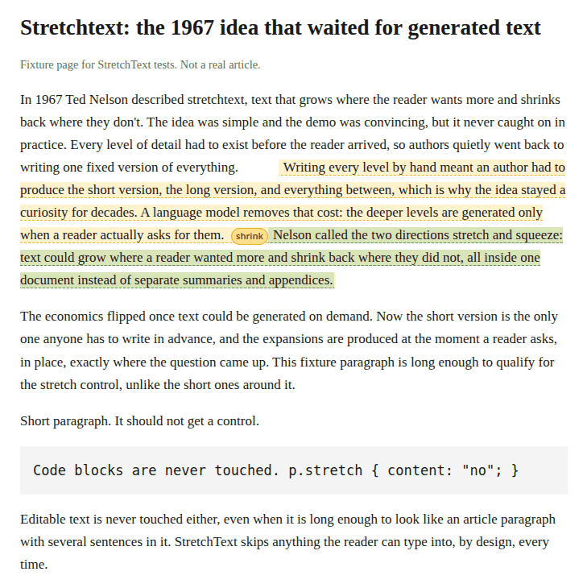

Turn any web page into stretchtext. Hover a paragraph, hit + stretch, and a Pollinations text model grows the passage in place, tinted so you can see what is grown. Hit shrink and the page is exactly what it was. Grown text stretches one level deeper still.
Ted Nelson described stretchtext in 1967. Writing every level by hand was too much work, so it never caught on. Generated text makes it cheap.
chrome://extensions in a Chromium browser.Readers pay with their own Pollen: connect with the BYOP device flow in
options (approve in your browser, the extension polls for your key), or paste
your own Pollinations API key. Keys stay in chrome.storage.local
on your machine. Every call goes to gen.pollinations.ai with
your key.

The real content script on a local fixture page, model call mocked. Code blocks and editable fields are never touched, and shrink restores the page exactly.
Source, tests, and issues: github.com/Dextheking1/stretchtext